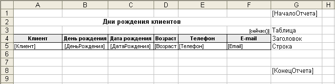
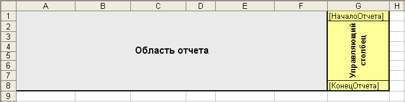
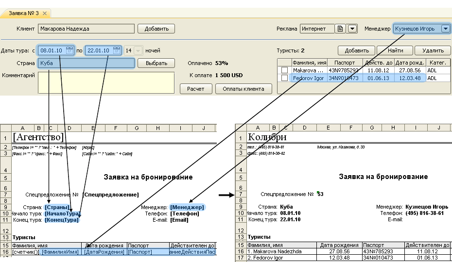

Шаблон в формате Microsoft Excel

Шаблон этого типа является документом Excel специального вида. В нем обязательно должен присутствовать
так называемый "управляющий столбец". Этот столбец определяет границы шаблона и содержит специальные
конструкции, задающие правила формирования строк отчета. Верхняя ячейка этого столбца помечается
тегом [НачалоОтчета], последняя строка шаблона в этом столбце имеет тег [КонецОтчета].
Таким образом, структура шаблона выглядит схематично следующим образом:

Для каждого шаблона задан определенный набор полей. Каждое такое поле, находящееся
в квадратных скобках, программа заменяет на соответствующее ему значение из документа.
Например, для шаблона "Заявки на бронирование" заданы следующие поля: Агентство, Страны, Менеджер,
ФамилияИмя, ДатаРождения и др. При печати программа будет заменять эти поля на значения
из документа "Заявка", для которого печатается данная "Заявка на бронирование":
- [Агентство] → Колибри
- [Страны] → Куба
- [Менеджер] → Кузнецов Игорь
- [ФамилияИмя] → Makarova Nadezda
[ДатаРождения] → 27.08.1956

Управление формированием отчета в формате Microsoft Excel
Ключевые слова, помещаемые в управляющий столбец, определяют правила формирования строк отчета.
Поддерживаются следующие ключевые слова:
БезРазрываНачало, БезРазрываКонец
Теги, ограничивающие область в документе, которая должна быть распечатана на одной странице
Следующая группа ключевых слов относится к формированию таблиц в отчетах:
таблица источник="НазваниеИсточникаДанных"
Определяет начало вывода таблицы. Для каждого отчета существует один или несколько источников табличных данных. Каждый из них имеет название, которое указывается в данной конструкции.
заголовок
Определяет строки заголовка таблицы. Они распологаются между строками, отмеченными ключевыми словами "таблица" и "строка".
строка
Определяет одну строку в выводимой таблице. Шаблон этой строки с подставляемыми вместо ключевый слов и выражений значениями выводится для каждой строки сформированной программой таблицей в получаемый документ.
итоги
Определяет строку (или несколько строк) выводимые непосредственно после последней строки (строка) таблицы. В строках, соотвествующих данному ключевому слову, выводятся итоги по содержимому таблицы, например количество строк таблицы или сумма элементов в столбце.
Остались вопросы? Напишите нам на e-mail